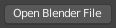
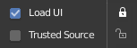

Buttons¶
Operator Buttons¶

Operator button.
Operator buttons perform an action when clicked with LMB. Button may show an icon, text, or both.
Checkboxes & Toggle Buttons¶

Checkboxes and Toggle buttons.
These controls are used to activate or deactivate options. Use LMB to change their state. A tick is shown on checkboxes when the option is activated. Active status on toggle buttons is indicated either by color on the icon background, or a change in icon graphics.
Dragging¶
To change many values at once on or off, you can press down LMB and drag over multiple buttons. This works for check boxes, toggles and to select a radio button value.